Calidad y Tradición en Cada Gota de Leche
Somos una empresa familiar dedicada a la producción de leche y carne bovina con los más altos estándares de calidad y bienestar animal.
Nuestra Historia
Más de tres décadas de experiencia en el sector ganadero
Una Tradición Familiar
La Finca Ganadera El Progreso fue fundada en 1985 por la familia Rodríguez, con el sueño de crear una empresa ganadera que combinara la tradición rural con las técnicas más modernas de producción.
A lo largo de más de tres décadas, hemos crecido de manera sostenible, manteniendo siempre nuestro compromiso con la calidad del producto, el bienestar animal y el desarrollo de nuestra comunidad.
Hoy, con más de 500 cabezas de ganado y un equipo de 30 profesionales comprometidos, somos referentes en la región por la calidad de nuestra leche, queso artesanal y carne premium.
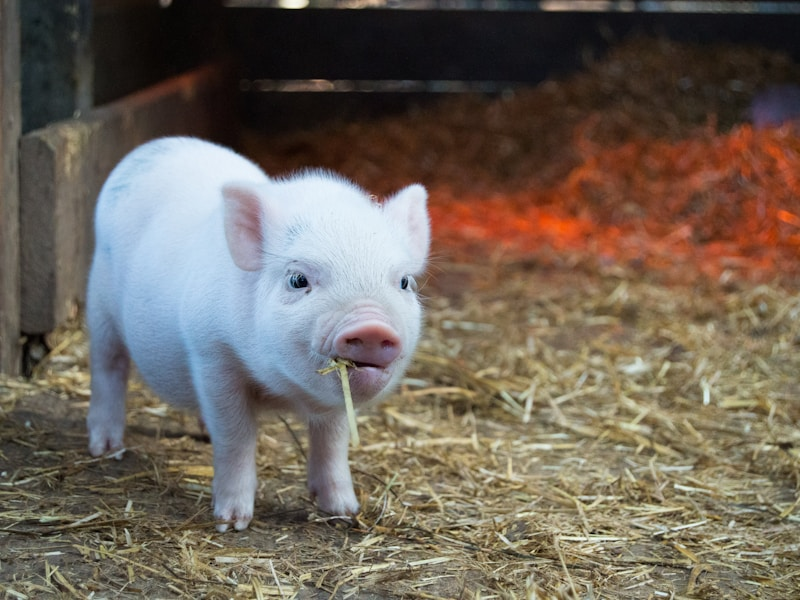
Misión
Producir leche, carne y sus derivados con los más altos estándares de calidad e inocuidad, garantizando el bienestar animal y la sostenibilidad ambiental, para satisfacer las necesidades de nuestros clientes con productos frescos y nutritivos.
Visión
Ser reconocidos como la finca ganadera líder en la región por la excelencia de nuestros procesos, la innovación tecnológica y nuestro compromiso con el desarrollo sostenible del sector agropecuario nacional.
Nuestros Valores
Honestidad
Transparencia en cada proceso y trato con nuestros clientes y aliados.
Calidad
Estándares rigurosos que garantizan productos superiores.
Compromiso
Dedicación plena con nuestro equipo, clientes y el medio ambiente.
Innovación
Adoptamos nuevas tecnologías para mejorar nuestra producción.
Sostenibilidad
Producción responsable que cuida los recursos naturales.
Nuestro Equipo
Profesionales comprometidos con la excelencia
Carlos Rodríguez
Director GeneralMaría González
Directora de ProducciónAndrés Martínez
Veterinario JefeNuestros Servicios
Soluciones integrales en el sector ganadero

Producción de Leche
Producimos leche fresca de alta calidad mediante procesos controlados y tecnología de punta que garantizan inocuidad y nutrientes.
Beneficios
- Leche 100% natural y fresca
- Control de calidad en cada etapa
- Cadena de frío garantizada
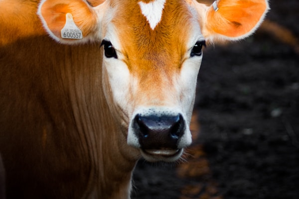
Venta de Ganado
Ofrecemos ganado bovino de razas superiores, seleccionado genéticamente para reproducción y producción.
Beneficios
- Razas certificadas
- Genética mejorada
- Asesoría post-venta
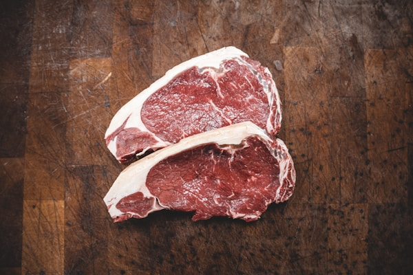
Producción de Carne
Carne bovina premium de animales alimentados en pastoreo natural, con procesos que aseguran la máxima calidad.
Beneficios
- Alimentación 100% natural
- Carnes certificadas
- Presentación según客户需求
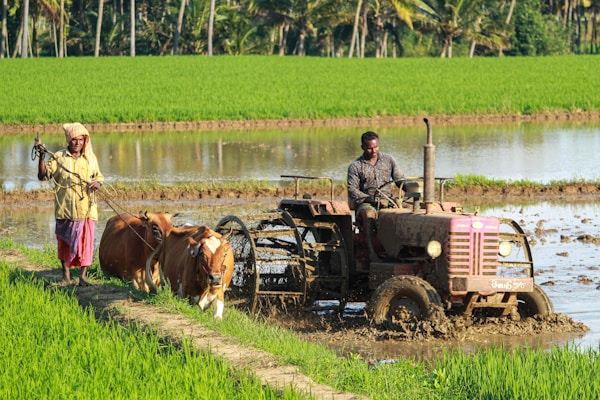
Asesoría Agropecuaria
Brindamos consultoría especializada en manejo ganadero, nutrición animal y optimización de procesos productivos.
Beneficios
- Plan de nutrición personalizado
- Manejo sanitario integral
- Optimización de costos
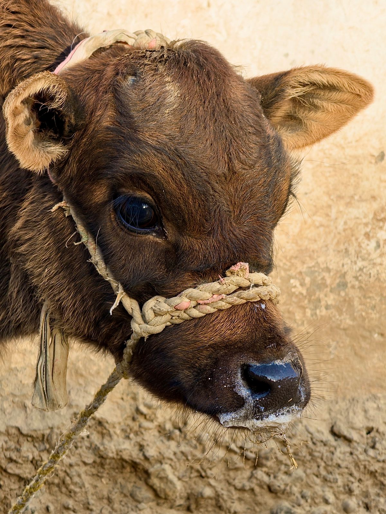
Crianza y Reproducción
Programas de melhoramiento genético y reproducción asistida para mejorar continuamente nuestro rebaño.
Beneficios
- Inseminación artificial
- Control reproductivo
- Seguimiento veterinario
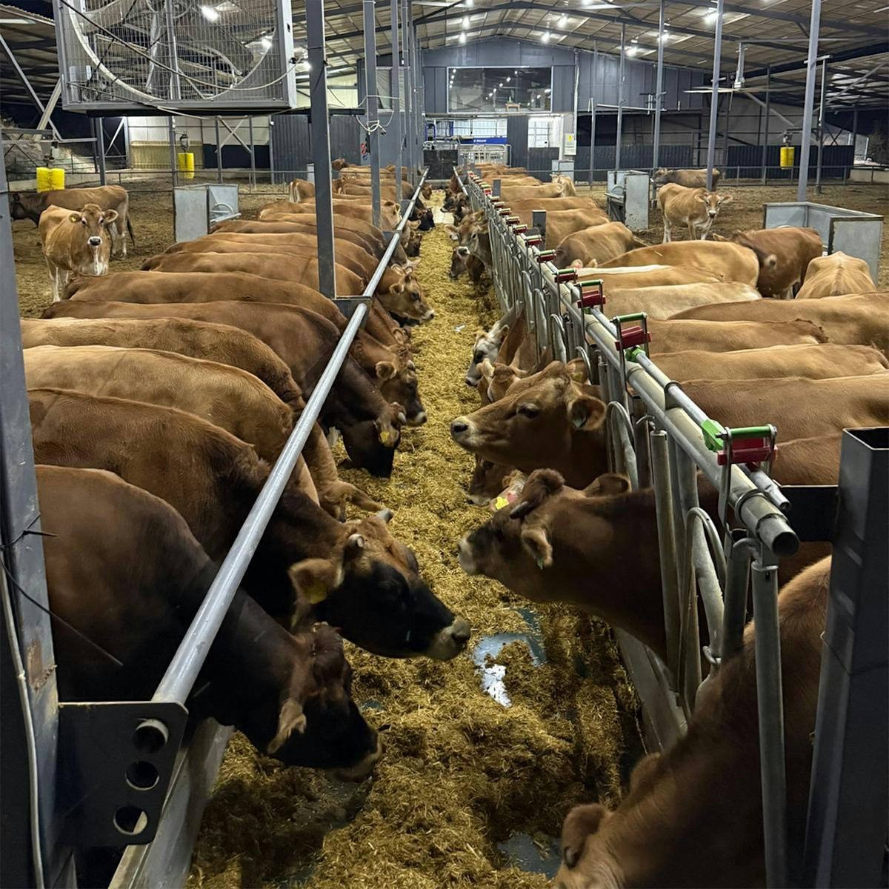
Producción de Alimentos
Fabricamos alimentos balanceados para ganado con fórmulas nutritivas que optimizan la producción lechera y el desarrollo animal.
Beneficios
- Fórmulas personalizadas
- Materias primas naturales
- Mayor producción lechera
Nuestros Productos
Productos frescos y naturales directamente de nuestra finca
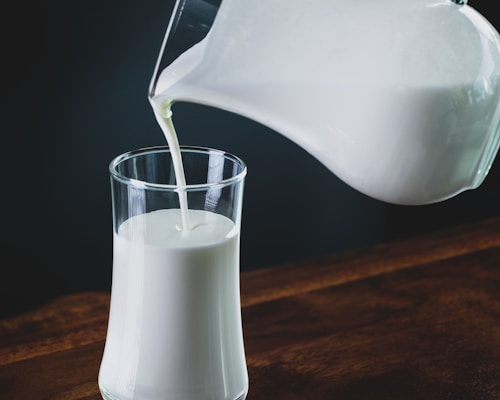
$1.50 / litroLeche Fresca
Leche natural fresca, pasteurizada y envasada con los más altos estándares de higiene y calidad.
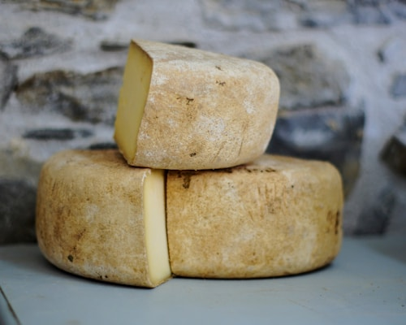
$8.00 / kgQueso Artesanal
Queso elaborado artesanalmente con leche fresca de nuestra finca, con sabor y textura inigualables.
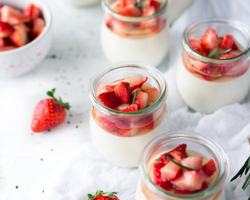
$2.50 / unidadYogur Natural
Yogur natural sin conservantes artificiales, rico en probióticos y nutrientes esenciales.
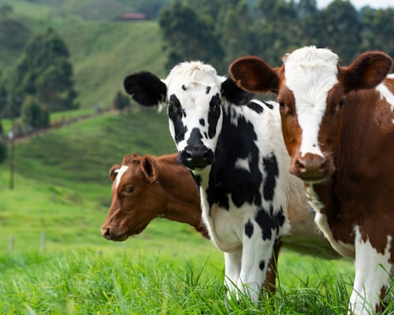
ConsultarGanado para Reproducción
Hembras y machos de razas superiores, seleccionados genéticamente para mejorar tu rebaño.
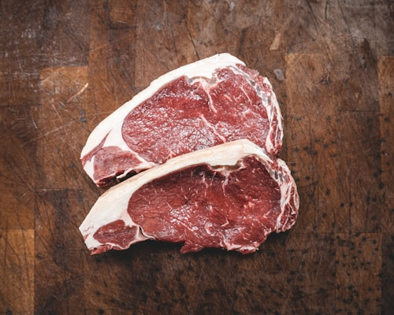
$12.00 / kgCarne Premium
Carne bovina de primera calidad, de animales alimentados en pastoreo natural sin hormonas.
 $6.00 / pieza
$6.00 / pieza
Mantequilla Artesanal
Mantequilla natural elaborada con crema de leche fresca, ideal para cocinar y untar.
Nuestra Galería
Conozca nuestras instalaciones, ganado y proceso productivo
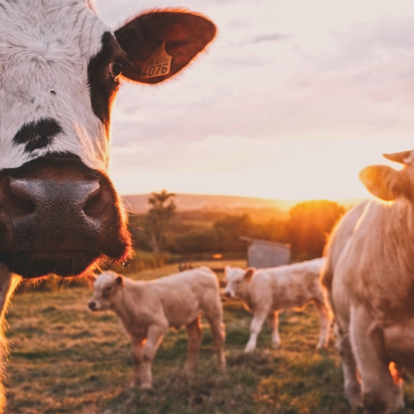
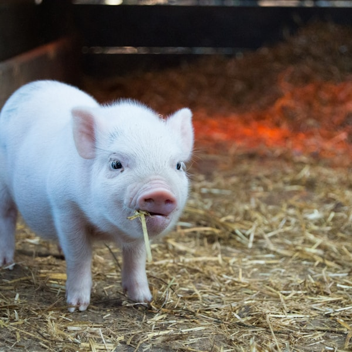
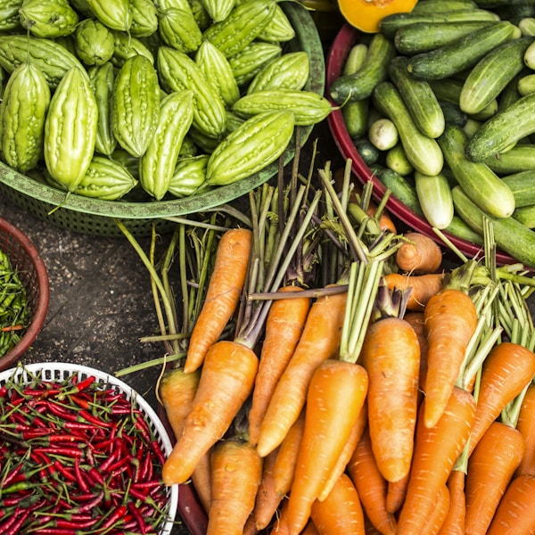
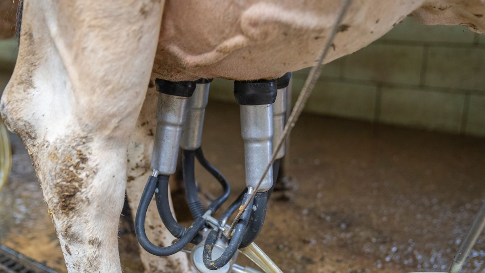
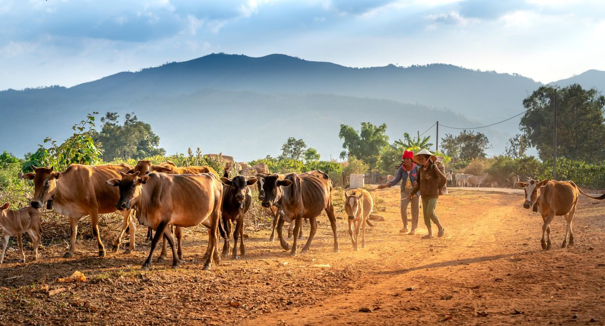
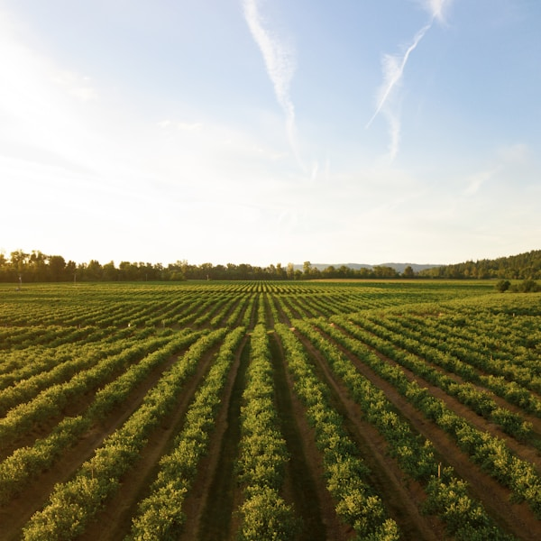
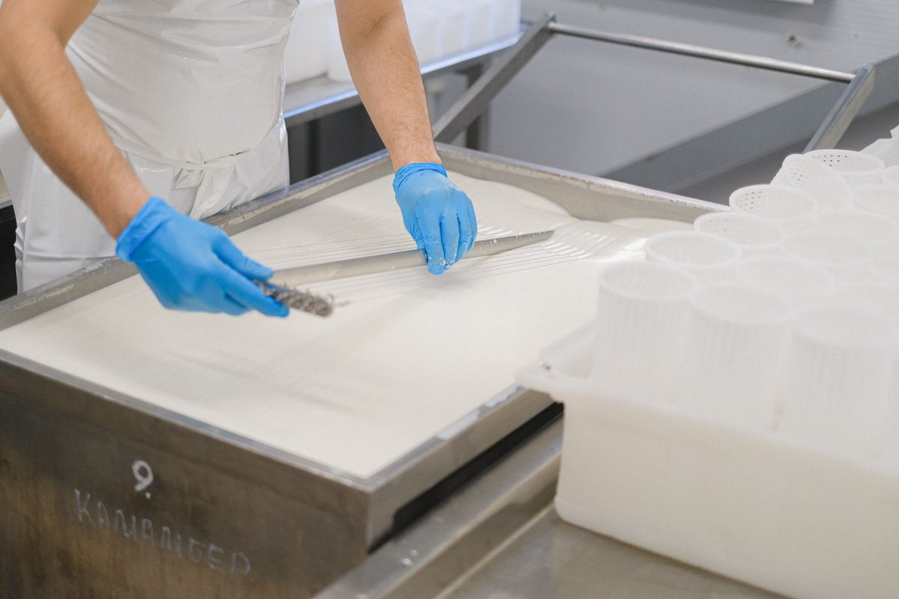

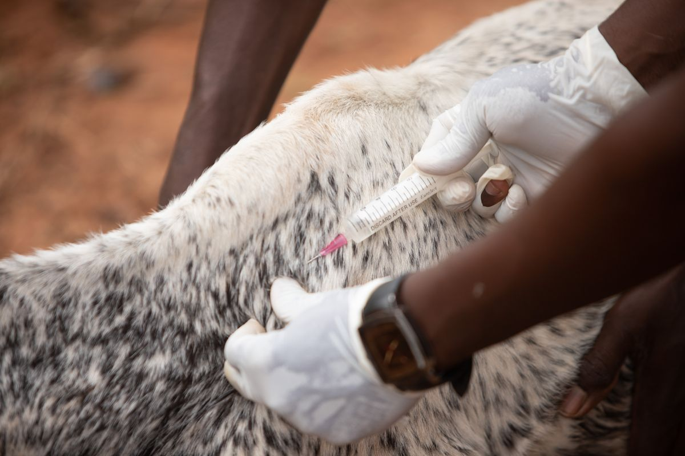
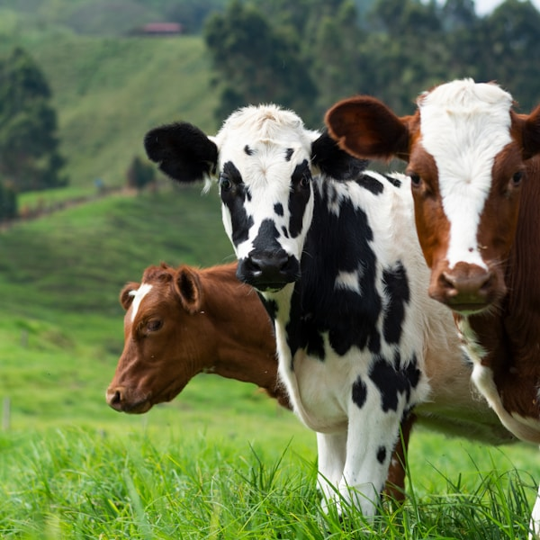
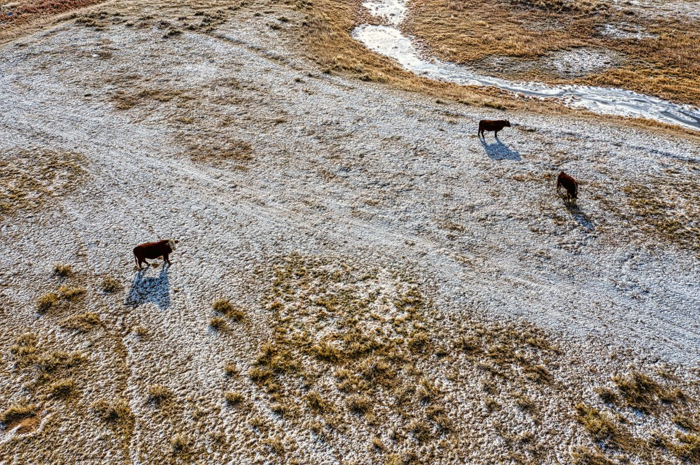
Contáctenos
Estamos aquí para atender sus consultas
Información de Contacto
Dirección
Km 15 Vía al Norte, Sector El Progreso
Santo Domingo, República Dominicana
Teléfono
+1 809 123 4567
+1 809 234 5678
Correo Electrónico
info@elprogreso.com
ventas@elprogreso.com
Horario de Atención
Lunes a Viernes: 7:00 AM - 5:00 PM
Sábados: 7:00 AM - 12:00 PM